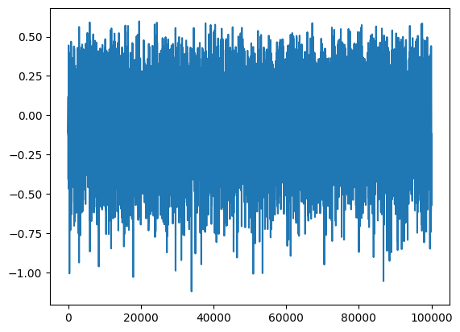
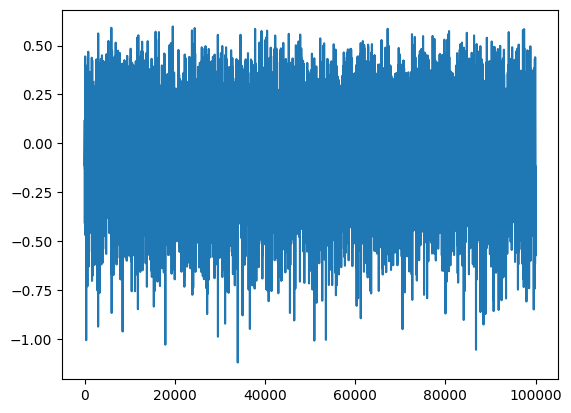

train_val, test = nonlinear_benchmarks.WienerHammerBenchMark()
plt.plot(train_val.y)
type(train_val)nonlinear_benchmarks.utilities.Input_output_data
First, we evaluate how the datasets are loaded by the nonlinear_benchmarks library
train_val, test = nonlinear_benchmarks.WienerHammerBenchMark()
plt.plot(train_val.y)
type(train_val)nonlinear_benchmarks.utilities.Input_output_data
The data is store in a Input_output_data class, which provides customized access. We want to write a function, which exports the underlying data to hdf5 files.
write_dataset (group, ds_name:str, data:<built-infunctionarray>, dtype='f4', chunks=None)
| Type | Default | Details | |
|---|---|---|---|
| group | opened hdf5 group to write the dataset, can be a file or group | ||
| ds_name | str | name of the new dataset | |
| data | array | data to write to the dataset | |
| dtype | str | f4 | datatype, the data will be converted to |
| chunks | NoneType | None | chunking of the hdf5 file, enables faster reading and writing of small parts |
write_array (group, ds_name:str, data:<built-infunctionarray>, dtype='f4', chunks=None)
Writes a 2d numpy array rowwise to a hdf5 file.
| Type | Default | Details | |
|---|---|---|---|
| group | opened hdf5 group to write the dataset, can be a file or group | ||
| ds_name | str | name of the new dataset | |
| data | array | data to write to the dataset | |
| dtype | str | f4 | datatype, the data will be converted to |
| chunks | NoneType | None | chunking of the hdf5 file, enables faster reading and writing of small parts |
| Returns | None |
iodata_to_hdf5 (iodata:nonlinear_benchmarks.utilities.Input_output_data, hdf_dir:pathlib.Path, f_name:str=None)
| Type | Default | Details | |
|---|---|---|---|
| iodata | Input_output_data | data to save to file | |
| hdf_dir | Path | Export directory for hdf5 files | |
| f_name | str | None | name of hdf5 file without ‘.hdf5’ ending |
Let us evaluate how the general shape of the downloaded datasets looks like
for bench in nonlinear_benchmarks.all_splitted_benchmarks:
train,test = bench(atleast_2d=True,always_return_tuples_of_datasets=True)
print(type(train))
print(type(train[0]))
break<class 'tuple'>
<class 'nonlinear_benchmarks.utilities.Input_output_data'>With the correct flags set, all datasets have a consistent training and test tuple of one or more elements of type Input_output_data. We will transform that in a training, validation and test tuple, which we will then save with a single function.
Only the datasets in nonlinear_benchmarks.all_splitted_benchmarks have a consistent output form. The other benchmarks have random splits
dataset_to_hdf5 (train:tuple, valid:tuple, test:tuple, save_path:pathlib.Path, train_valid:tuple=None)
Save a dataset consisting of training, validation, and test set in hdf5 format in seperate subdirectories
| Type | Default | Details | |
|---|---|---|---|
| train | tuple | tuple of Input_output_data for training | |
| valid | tuple | tuple of Input_output_data for validation | |
| test | tuple | tuple of Input_output_data for test | |
| save_path | Path | directory the files are written to, created if it does not exist | |
| train_valid | tuple | None | optional tuple of unsplit Input_output_data for training and validation |
unzip_download (url:str, extract_dir='.')
downloads a zip archive to ram and extracts it
| Type | Default | Details | |
|---|---|---|---|
| url | str | url to file to download | |
| extract_dir | str | . | directory the archive is extracted to |
unrar_download (url:str, extract_dir='.')
downloads a rar archive to ram and extracts it
| Type | Default | Details | |
|---|---|---|---|
| url | str | url to file to download | |
| extract_dir | str | . | directory the archive is extracted to |
download (url:str, target_dir='.')
| Type | Default | Details | |
|---|---|---|---|
| url | str | url to file to download | |
| target_dir | str | . |